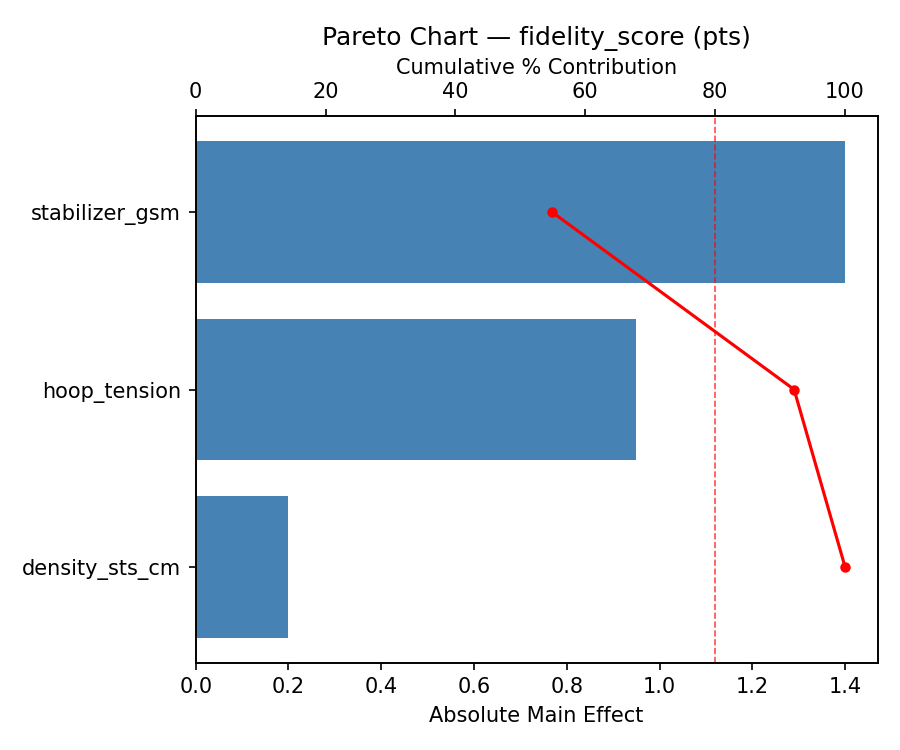
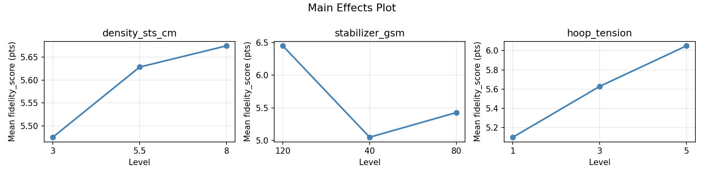
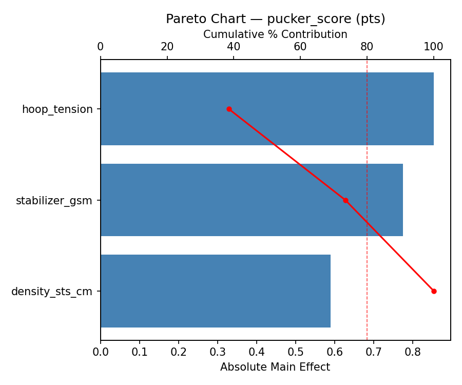
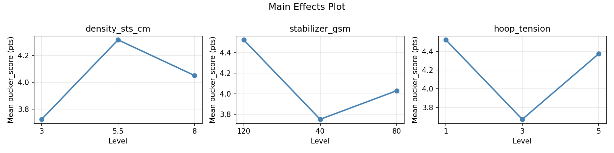
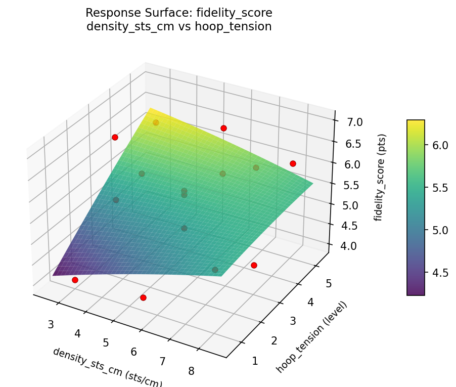
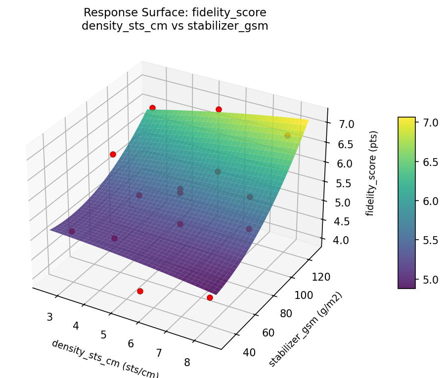
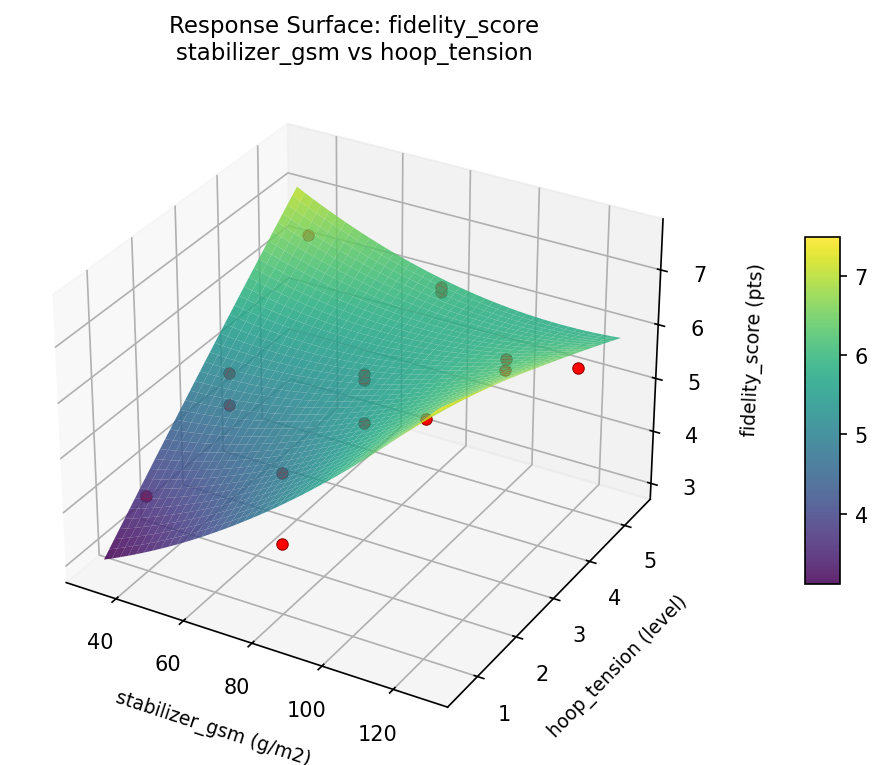
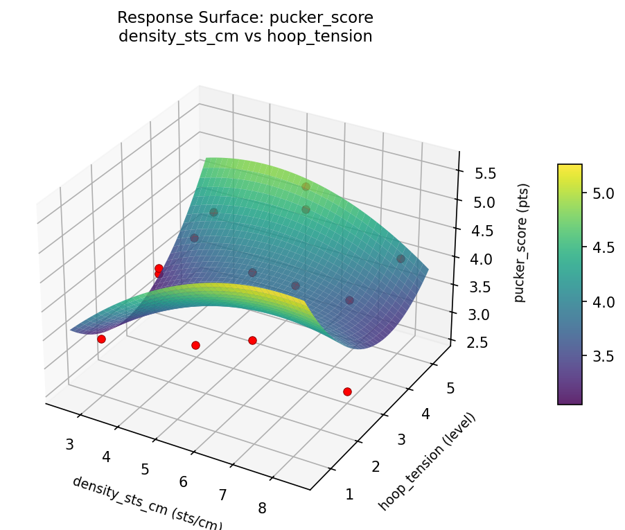
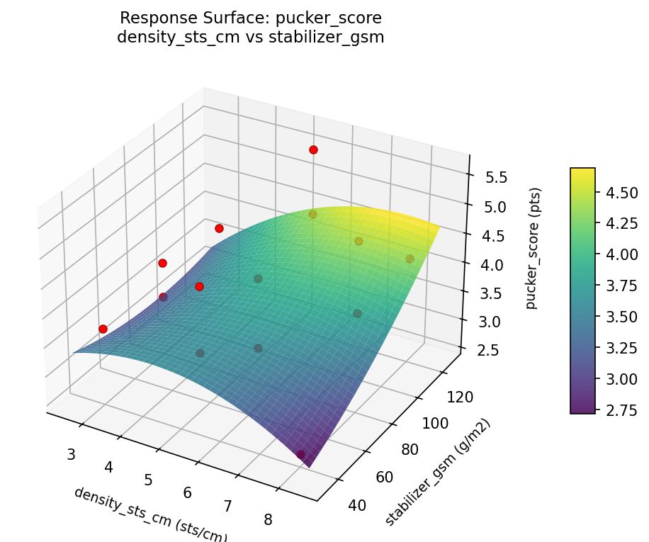
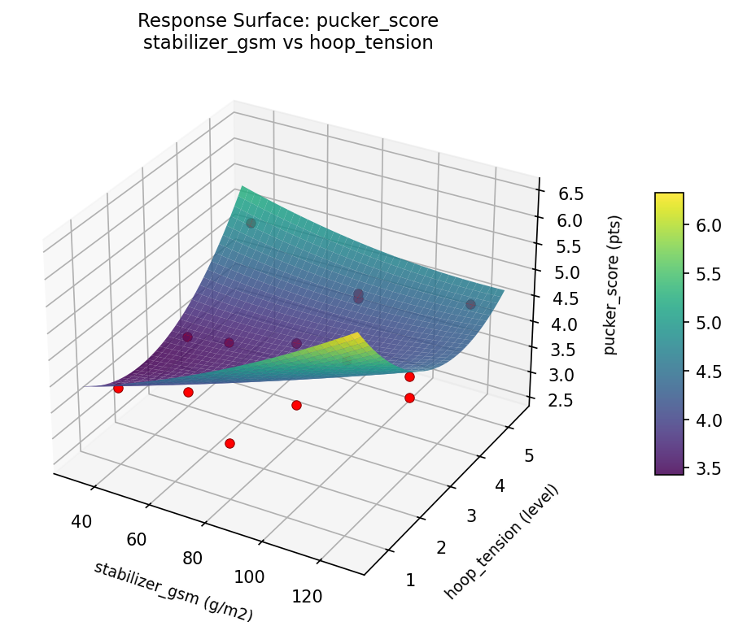

Summary
This experiment investigates machine embroidery settings. Box-Behnken design to maximize design fidelity and minimize puckering by tuning stitch density, stabilizer weight, and hoop tension.
The design varies 3 factors: density sts cm (sts/cm), ranging from 3 to 8, stabilizer gsm (g/m2), ranging from 40 to 120, and hoop tension (level), ranging from 1 to 5. The goal is to optimize 2 responses: fidelity score (pts) (maximize) and pucker score (pts) (minimize). Fixed conditions held constant across all runs include machine = single_needle, thread = rayon_40wt.
A Box-Behnken design was chosen because it efficiently fits quadratic models with 3 continuous factors while avoiding extreme corner combinations — requiring only 15 runs instead of the 8 needed for a full factorial at two levels.
Quadratic response surface models were fitted to capture potential curvature and factor interactions. The RSM contour plots below visualize how pairs of factors jointly affect each response.
Key Findings
For fidelity score, the most influential factors were stabilizer gsm (54.9%), hoop tension (37.3%), density sts cm (7.8%). The best observed value was 7.0 (at density sts cm = 5.5, stabilizer gsm = 80, hoop tension = 3).
For pucker score, the most influential factors were hoop tension (38.5%), stabilizer gsm (34.9%), density sts cm (26.6%). The best observed value was 2.6 (at density sts cm = 8, stabilizer gsm = 80, hoop tension = 5).
Recommended Next Steps
- Run confirmation experiments at the predicted optimal settings to validate the model.
- Consider whether any fixed factors should be varied in a future study.
Experimental Setup
Factors
| Factor | Low | High | Unit |
|---|
density_sts_cm | 3 | 8 | sts/cm |
stabilizer_gsm | 40 | 120 | g/m2 |
hoop_tension | 1 | 5 | level |
Fixed: machine = single_needle, thread = rayon_40wt
Responses
| Response | Direction | Unit |
|---|
fidelity_score | ↑ maximize | pts |
pucker_score | ↓ minimize | pts |
Configuration
{
"metadata": {
"name": "Machine Embroidery Settings",
"description": "Box-Behnken design to maximize design fidelity and minimize puckering by tuning stitch density, stabilizer weight, and hoop tension"
},
"factors": [
{
"name": "density_sts_cm",
"levels": [
"3",
"8"
],
"type": "continuous",
"unit": "sts/cm"
},
{
"name": "stabilizer_gsm",
"levels": [
"40",
"120"
],
"type": "continuous",
"unit": "g/m2"
},
{
"name": "hoop_tension",
"levels": [
"1",
"5"
],
"type": "continuous",
"unit": "level"
}
],
"fixed_factors": {
"machine": "single_needle",
"thread": "rayon_40wt"
},
"responses": [
{
"name": "fidelity_score",
"optimize": "maximize",
"unit": "pts"
},
{
"name": "pucker_score",
"optimize": "minimize",
"unit": "pts"
}
],
"settings": {
"operation": "box_behnken",
"test_script": "use_cases/181_embroidery_design/sim.sh"
}
}
Experimental Matrix
The Box-Behnken Design produces 15 runs. Each row is one experiment with specific factor settings.
| Run | density_sts_cm | stabilizer_gsm | hoop_tension |
|---|
| 1 | 5.5 | 40 | 1 |
| 2 | 5.5 | 80 | 3 |
| 3 | 8 | 80 | 5 |
| 4 | 8 | 80 | 1 |
| 5 | 5.5 | 80 | 3 |
| 6 | 5.5 | 80 | 3 |
| 7 | 3 | 80 | 5 |
| 8 | 8 | 40 | 3 |
| 9 | 5.5 | 40 | 5 |
| 10 | 8 | 120 | 3 |
| 11 | 3 | 80 | 1 |
| 12 | 5.5 | 120 | 5 |
| 13 | 3 | 40 | 3 |
| 14 | 3 | 120 | 3 |
| 15 | 5.5 | 120 | 1 |
Step-by-Step Workflow
1
Preview the design
$ python doe.py info --config use_cases/181_embroidery_design/config.json
2
Generate the runner script
$ python doe.py generate --config use_cases/181_embroidery_design/config.json \
--output use_cases/181_embroidery_design/results/run.sh --seed 42
3
Execute the experiments
$ bash use_cases/181_embroidery_design/results/run.sh
4
Analyze results
$ python doe.py analyze --config use_cases/181_embroidery_design/config.json
5
Get optimization recommendations
$ python doe.py optimize --config use_cases/181_embroidery_design/config.json
6
Generate the HTML report
$ python doe.py report --config use_cases/181_embroidery_design/config.json \
--output use_cases/181_embroidery_design/results/report.html
Features Exercised
| Feature | Value |
|---|
| Design type | box_behnken |
| Factor types | continuous (all 3) |
| Arg style | double-dash |
| Responses | 2 (fidelity_score ↑, pucker_score ↓) |
| Total runs | 15 |
Analysis Results
Generated from actual experiment runs using the DOE Helper Tool.
Response: fidelity_score
Top factors: stabilizer_gsm (54.9%), hoop_tension (37.3%), density_sts_cm (7.8%).
Pareto Chart

Main Effects Plot

Response: pucker_score
Top factors: hoop_tension (38.5%), stabilizer_gsm (34.9%), density_sts_cm (26.6%).
Pareto Chart

Main Effects Plot

Response Surface Plots
3D surfaces fitted with quadratic RSM. Red dots are observed data points.
fidelity score density sts cm vs hoop tension

fidelity score density sts cm vs stabilizer gsm

fidelity score stabilizer gsm vs hoop tension

pucker score density sts cm vs hoop tension

pucker score density sts cm vs stabilizer gsm

pucker score stabilizer gsm vs hoop tension

Full Analysis Output
RSM surface: rsm_fidelity_score_density_sts_cm_vs_stabilizer_gsm.png
RSM surface: rsm_fidelity_score_density_sts_cm_vs_hoop_tension.png
RSM surface: rsm_fidelity_score_stabilizer_gsm_vs_hoop_tension.png
RSM surface: rsm_pucker_score_density_sts_cm_vs_stabilizer_gsm.png
RSM surface: rsm_pucker_score_density_sts_cm_vs_hoop_tension.png
RSM surface: rsm_pucker_score_stabilizer_gsm_vs_hoop_tension.png
=== Main Effects: fidelity_score ===
Factor Effect Std Error % Contribution
--------------------------------------------------------------
stabilizer_gsm 1.4000 0.2465 54.9%
hoop_tension 0.9500 0.2465 37.3%
density_sts_cm 0.2000 0.2465 7.8%
=== Summary Statistics: fidelity_score ===
density_sts_cm:
Level N Mean Std Min Max
------------------------------------------------------------
3 4 5.4750 1.1701 4.0000 6.6000
5.5 7 5.6286 0.9656 4.1000 7.0000
8 4 5.6750 0.9946 4.5000 6.8000
stabilizer_gsm:
Level N Mean Std Min Max
------------------------------------------------------------
120 4 6.4500 0.7188 5.4000 7.0000
40 4 5.0500 1.0504 4.1000 6.5000
80 7 5.4286 0.7740 4.0000 6.2000
hoop_tension:
Level N Mean Std Min Max
------------------------------------------------------------
1 4 5.1000 1.3976 4.0000 7.0000
3 7 5.6286 0.8597 4.5000 6.8000
5 4 6.0500 0.4655 5.4000 6.5000
=== Main Effects: pucker_score ===
Factor Effect Std Error % Contribution
--------------------------------------------------------------
hoop_tension 0.8536 0.2049 38.5%
stabilizer_gsm 0.7750 0.2049 34.9%
density_sts_cm 0.5893 0.2049 26.6%
=== Summary Statistics: pucker_score ===
density_sts_cm:
Level N Mean Std Min Max
------------------------------------------------------------
3 4 3.7250 0.2500 3.4000 4.0000
5.5 7 4.3143 0.8214 3.0000 5.6000
8 4 4.0500 1.1091 2.6000 5.3000
stabilizer_gsm:
Level N Mean Std Min Max
------------------------------------------------------------
120 4 4.5250 0.7719 3.8000 5.6000
40 4 3.7500 0.9399 2.6000 4.9000
80 7 4.0286 0.7228 3.0000 5.3000
hoop_tension:
Level N Mean Std Min Max
------------------------------------------------------------
1 4 4.5250 1.0874 3.4000 5.6000
3 7 3.6714 0.6396 2.6000 4.2000
5 4 4.3750 0.4113 4.0000 4.9000
Pareto chart (fidelity_score): use_cases/181_embroidery_design/results/analysis/pareto_fidelity_score.png
Pareto chart (pucker_score): use_cases/181_embroidery_design/results/analysis/pareto_pucker_score.png
Main effects (fidelity_score): use_cases/181_embroidery_design/results/analysis/main_effects_fidelity_score.png
Main effects (pucker_score): use_cases/181_embroidery_design/results/analysis/main_effects_pucker_score.png
Optimization Recommendations
=== Optimization: fidelity_score ===
Direction: maximize
Best observed run: #3
density_sts_cm = 5.5
stabilizer_gsm = 80
hoop_tension = 3
Value: 7.0
RSM Model (linear, R² = 0.0790, Adj R² = -0.1722):
Coefficients:
intercept +5.6000
density_sts_cm +0.3250
stabilizer_gsm -0.0875
hoop_tension +0.1125
RSM Model (quadratic, R² = 0.2673, Adj R² = -1.0515):
Coefficients:
intercept +5.6667
density_sts_cm +0.3250
stabilizer_gsm -0.0875
hoop_tension +0.1125
density_sts_cm*stabilizer_gsm -0.4250
density_sts_cm*hoop_tension -0.2750
stabilizer_gsm*hoop_tension +0.3500
density_sts_cm^2 -0.1083
stabilizer_gsm^2 +0.3167
hoop_tension^2 -0.3333
Curvature analysis:
hoop_tension coef=-0.3333 concave (has a maximum)
stabilizer_gsm coef=+0.3167 convex (has a minimum)
density_sts_cm coef=-0.1083 concave (has a maximum)
Notable interactions:
density_sts_cm*stabilizer_gsm coef=-0.4250 (antagonistic)
stabilizer_gsm*hoop_tension coef=+0.3500 (synergistic)
Predicted optimum (from linear model):
density_sts_cm = 8
stabilizer_gsm = 80
hoop_tension = 5
Predicted value: 6.0375
Model quality: Weak fit — consider adding center points or using a different design.
Factor importance:
1. density_sts_cm (effect: 0.7, contribution: 42.0%)
2. hoop_tension (effect: 0.5, contribution: 29.8%)
3. stabilizer_gsm (effect: 0.4, contribution: 28.2%)
=== Optimization: pucker_score ===
Direction: minimize
Best observed run: #14
density_sts_cm = 8
stabilizer_gsm = 80
hoop_tension = 5
Value: 2.6
RSM Model (linear, R² = 0.1197, Adj R² = -0.1204):
Coefficients:
intercept +4.0867
density_sts_cm -0.2250
stabilizer_gsm -0.2250
hoop_tension -0.1750
RSM Model (quadratic, R² = 0.5152, Adj R² = -0.3576):
Coefficients:
intercept +4.5000
density_sts_cm -0.2250
stabilizer_gsm -0.2250
hoop_tension -0.1750
density_sts_cm*stabilizer_gsm -0.2500
density_sts_cm*hoop_tension -0.6000
stabilizer_gsm*hoop_tension -0.0500
density_sts_cm^2 +0.1750
stabilizer_gsm^2 -0.4250
hoop_tension^2 -0.5250
Curvature analysis:
hoop_tension coef=-0.5250 concave (has a maximum)
stabilizer_gsm coef=-0.4250 concave (has a maximum)
density_sts_cm coef=+0.1750 convex (has a minimum)
Notable interactions:
density_sts_cm*hoop_tension coef=-0.6000 (antagonistic)
Predicted optimum (from linear model):
density_sts_cm = 3
stabilizer_gsm = 40
hoop_tension = 3
Predicted value: 4.5367
Model quality: Weak fit — consider adding center points or using a different design.
Factor importance:
1. hoop_tension (effect: 0.7, contribution: 38.4%)
2. stabilizer_gsm (effect: 0.6, contribution: 35.2%)
3. density_sts_cm (effect: 0.5, contribution: 26.4%)